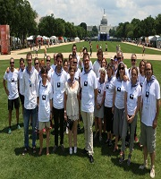
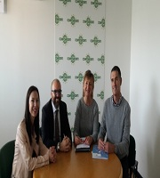

Noticias Zubiri - Manteo
Premios Don-Bosco
"eOntzia" proiektuak "Premio Nacional Don Bosco a la innovación" lehiaketan 1. saria lortu du TICs arloan. Zorionak proiektu hontan parte hartu duten guztioi.

Turismoko ikasleak Washington-en
Turismoko bi ikasle, Garazi eta Mireia, Washinton-eko Folklife Festival-ean lanean egon dira. Argazkian Donostia2016-ko kamixetekin ikusi ditzakegu.

Erasmus+ Italian
CONFESERCENTI ( Italiako Zerbitzu enpresen elkarte nazionalarekin elkartu ginen. Aldi berean enpresak bisitatu genituen formakuntza beharrak zeintzuk diren zuzenean ezagutzeko.